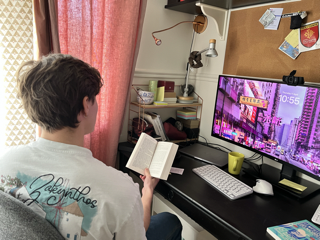

I'm Elio Bernardinello, a 19-year-old student at ESSEC BBA 🙋🏼. I'm passionate about cars, enjoy reading a wide range of books, and stay active with various sports 😁.
Discover EssecI've been passionate about cars for as long as I can remember, with a dream to someday open my own luxury car dealership. Below is a photo of my favorite car, the McLaren P1, which embodies the pinnacle of automotive design and performance to me.
I'm passionate about reading. It's a way for me to explore new worlds, understand different perspectives, and constantly learn something new I love getting lost in the worlds that authors create.
For the past two years, I've been passionate about CrossFit . It's not just a workout; it's a way to challenge myself physically and mentally. I love the variety and intensity of the exercises, and the strong sense of community at my local box keeps me coming back. CrossFit has truly transformed my fitness and my mindset.